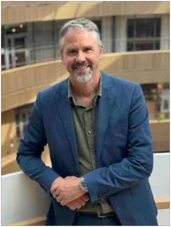

Play it forward
Om boken
Vilka är vi bakom boken och projektet?
Medverkande personer som under hela projektet varit med och utformat, forskat, skapat förutsättningar för, byggt och designat Läran att lära till det som blev både denna bok och ny akademisk forskning:
Katarina Pietrzak
Katarina har länge arbetat som forskare och senior strateg på RISE inom livslångt lärande. Hon utforskar hur metoder, processer och mindset kan stärka människors förmåga att förstå, växa och agera i en tid av ständig förändring. För Katarina handlar lärande om mer än kompetens – det är grunden för både personlig utveckling, innovation och nödvändig för nyelse i samhället. Hon rör sig mellan forskning och praktik, mellan skola och arbetsliv, mellan bildningens djup och vardagens lärande. Katarinas övertygelse är att vi genom själva processen lärande kan rusta oss alla i den trans formativa tid vi lever i – där inkludering, nyfikenhet och bildning blir fundamenten för en hållbar framtid. Katarina har faciliterat workshops, hackathons och andra insatser under detta projekt, samt sammanställt och skrivit denna bok.
Jessica Körning Ljungberg
Jessica K. Ljungberg är professor och ämnesföreträdare i teknisk psykologi vid Luleå tekniska universitet. Hennes forskning spänner över ett brett område inom kognitiv psykologi, med särskilt fokus på hur människans uppmärksamhet och minne fungerar samt på hjärnans formbarhet. I sina tidigare studier har hon bland annat visat att aktiviteter som att lära sig flera språk kan stärka vissa minnesfunktioner som är till nytta senare i livet.
Jessica är en stark förespråkare för livslångt lärande och menar att vi aldrig får sluta utmana oss själva – att våga prova nytt, vara nyfikna och orädda, och att hitta vår inre drivkraft att upptäcka världen. Jessica och LTU har projektlett det som blev Läran att lära och initierat samt medverkat till och i den akademiska forskningen som både ligger till grund för och som genererats i - projektet.
Elisabeth Åström
Elisabeth Åström är legitimerad psykolog och universitetslektor vid Institutionen för psykologi, Umeå universitet. Hon disputerade 2018 i klinisk psykologi och har arbetat med undervisning, handledning och forskning i mer än femton år. Hennes forskning rör bland annat personlighetspsykologi, motivation och hur våra attityder påverkar vilja och förmåga till livslångt lärande.
I projektet Läran att lära har Elisabeth bidragit med sin forskningskompetens kring de psykologiska drivkrafter som gör att lärande blir meningsfullt och hållbart över tid. Hon intresserar sig särskilt för samspelet mellan självreflektion, öppenhet och motivation – och hur dessa faktorer formar människors läranderesor genom livet.
Patrik Sörqvist
Patrik Sörqvist är professor i psykologi vid Luleå tekniska universitet och Högskolan i Gävle. Han har sin bakgrund i experimentell kognitionspsykologi och forskar bland annat om minne och inlärning, bedömningar och beslutsfattande, och miljörelaterat konsumentbeteende.
Daniel Sörman
Daniel är lektor och docent i psykologi vid Umeå universitet och Luleå tekniska universitet, med en bakgrund inom kognitiv psykologi och forskar bland annat om hur minne, motivation och nyfikenhet påverkar lärandeprocesser och bidrar till vårt engagemang i lärande. Han har lång erfarenhet av att studera hur minnesfunktioner och kognitiva mekanismer påverkar vår förmåga att ta till oss, bearbeta och bevara kunskap. I projektet har han, utöver att undersöka rollen av nyfikenhet och personlighet i relation till lärande, även deltagit i arbetet med att utveckla och ut värdera den digitala verktygslådan för livslångt lärande, där självreflektion och självledarskap står i centrum. Daniel ser lärande inte bara som ett kunskapslyft, utan också som en form av mental träning, där minnesprocesser och hjärnans strukturer formas av engagemang i lärandeaktiviteter. Daniel har medverkat till och i den akademiska forskningen som både ligger till grund för och som genererats i - projektet.

Mikael Ahlström
Mikael Ahlström är grundare och vd för The Park, ett av Sveriges ledande coworking-nätverk och innovationshubbar där entreprenörer, forskare och kreatörer möts för att dela kunskap och växa tillsammans. Han har en lång bakgrund inom digitalisering, entreprenörskap och samhällsinnovation och har varit med och byggt initiativ som Hyper Island och SUP46.
Hans resa började på 1990-talet med en sportbutik i Stockholm och en digital plattform för skidåkare som blev världens största onlinecommunity för vintersport, vilket la grunden för en livslång passion för digital innovation och gemenskapsbyggande. Sedan dess har Mikael arbetat i gränslandet mellan startups, utbildning, näringsliv och offentlig sektor med strategier för innovation, transformation och hållbar tillväxt. Han ser innovation som ett mindset, format av kultur, nyfikenhet och tillit, och menar att framtidens lärande handlar om att bygga gemenskaper där kreativitet och kunskap får växa och människor tillsammans formar morgondagens samhälle. I det här projektet har han medverkat i forskningen och varit med och utvecklat tester och verktyg för självreflektion genom Learnable, som du kan läsa mer om i boken.
Helena Sjöström, Vice VD på NOX Consulting AB.
Helena och NOX Consulting har varit projektdeltagare från början av detta samverkansprojekt. NOX är en unik konsultmäklare inom IT och management med ett starkt community för över 7000 fri lansande IT-konsulter. NOX har lång erfarenhet och en omfattande verktygs låda kring att bygga och driva lärande och kompetensutveckling på innovativa sätt. Helena slutade på NOX november 2024 och driver nu det egna bolaget Impaction AB där hon hjälper organisationer och ledare att lyckas med sin AI-adoption. För Helena är lärande en av människans superkrafter, det som möjliggör att vi både kan anpassa oss och utvecklas. Det bästa med lärande är att vår hjärna är en muskel som kan formas. Vi kan träna upp vår förmåga att lära. Vi kan börja smått. Belöningen är ofta stor. När vi lär oss nytt väcks både glädje, nyfikenhet och självförtroende. Då vill vi gärna lära mer. Helena var ordförande i den arbetsgrupp från regeringens samverkansprogram som kom att bli projektet Läran att lära.
Felix Knutas
Felix arbetar som projektledare för forskning inom cybersäkerhet på Cybercampus Sverige som är en del av KTH och RISE. Han har en bakgrund inom psykologi med en inriktning på teknisk och kognitiv psykologi. Felix har bistått med litteratur översikter och rådgivning i det tidiga stadiet av projektet.
Carina Wedin, Verksamhets utvecklare på Omställningsfonden
Omställningsfonden hjälper individer att hitta nya vägar i arbetslivet och stödjer arbetsgivare i att rusta sina organisationer för framtidens kompetensbehov inom välfärdssektorn. Vi erbjuder rådgivning, studiestöd och verktyg för lärande som gör att personer lättare hittar sitt nya arbete.
Carina ser livslångt lärande som nyckeln till ett meningsfullt och motiverande arbetsliv. När du hittar dina inre drivkrafter som väcker nyfikenhet, lust och engagemang till lärande, så blir det enklare och roligare att möta förändringar och skapa en hållbar framtid.
Projektet Läran att lära
Projektet Läran att lära växte fram inom ramen för regeringens samverkansprogram om livslångt lärande och kompetensförsörjning, som lanserades 2019 och syftade till att stärka Sveriges förmåga att möta framtidens kompetensbehov. Programmet samlade aktörer från näringsliv, akademi, offentlig sektor och civilsamhälle för att tillsammans utveckla nya sätt att främja livslångt lärande, omställningsförmåga och inkluderande kompetensutveckling. Arbetet fokuserade på att bygga broar mellan politik och praktik, ta fram samverkansmodeller och sprida erfarenheter som kan bidra till ett mer lärande och hållbart samhälle.
I arbetsgruppen bakom detta projekt blev målet är att kartlägga människors attityder till sitt eget livslånga lärande, samt skapa ett digitalt stöd för att motivera lärandet och testa detta. Projektet Läran att lära har drivits av RISE, Luleå tekniska universitet i samverkan med medarbetare från Umeå Universitet, Sprout Park, Nox Consulting, stiftelsen Omställningsfonden och ABB, med stöd från Vinnova.
Medverkande och tack
- Författare och redaktör:
- Katarina Pietrzak
- Idé och utformning:
- Katarina Pietrzak tillsammans med Helena Sjöström och Mikael Ahlström
- Med viktiga bidrag och inspel från:
- Jessica Körning Ljungberg, Elisabeth Åström, Daniel Sörman, Patrik Sörqvist, Felix Knutas, Jonah Tvelin, Carina Wedin och Jonas Wikström.
- Design och illustrationer:
- Johan Brosow
- Foto:
- Lisa Carlgren
- Publicerad:
- 2026-03-01
- ISBN:
- 978-91-90109-36-6
- This work is licensed under CC BY 4.0
- https://creativecommons.org/licenses/by/4.0/
Webbversionen återger bokens text, bilder och struktur. Diagrammen är ritade på nytt från bokens figurer och använder bokens egna ord.
Innehållsförteckning
Bokens innehållsförteckning med sidnummer i den tryckta boken. Länkarna leder till samma ställe här.
- Förord4
- Vilka är vi bakom boken och projektet?8
- 1 Play it forward - projektet som blev en rörelse14
- 2 Playtime - lärandets plats i samhället16
- 3 Playground, bakgrund18
- Intervju med Mikael Ahlström22
- Learnable som plattform26
- Intervju Jannie Jeppesen30
- 4 Play to Play - lekens betydelse och roll34
- Intervju med Björn Flintberg38
- Intervju med Lina Emilsson42
- 5 Pulsen i vår playbook - fyra drivkrafter48
- 6 Play to Discover - att väcka nyfikenhet i en tid av klick och algoritmer52
- Intervju med Daniel Sörman56
- 7 Play it by Heart - Inre motivation som drivkraft62
- Intervju med Elisabeth Åström68
- Pause to Play - reflektion som verktyg74
- Intervju med Ann Molin82
- 8 Safe to Play - Psykologisk trygghet som drivkraft90
- Intervju med Frida Skog94
- 9 Replay and Recall - Framplockning som drivkraft100
- Intervju med Jessica Körning Ljungberg104
- 10 Play Thinking - lärandets design110
- Intervju med Lisa Carlgren116
- 11 Playjam - hacka möjligheterna i vardagen122
- Intervju med Helena Sjöström136
- Playtest Nox140
- Intervju med Jonas Wikström144
- 12 Play, Learn, Code - om tekniken som driver fram nya lärandebehov148
- Intervju med Petter Wannerberg152
- Intervju med Joel Rangsjö156
- intervju med Johan Berndtsson162
- Intervju med Binette Seck168
- Intervju med Jens Thorsen178
- Intervju med Joakim Jansson182
- 13 Play Against The Grain – Att skapa plats för lärandet186
- Intervju med Anna-Lena Rikardsson190
- Intervju med Johan Cedermark194
- Intervju med Josephine Bladh200
- 14 Play it forward - again204
- Referenslista210
Referenslista
A. Vetenskapliga publikationer
- Albarracín, D., Fayaz-Farkhad, B., & Granados Samayoa, J. A. (2024). Determinants of behaviour and their efficacy as targets of behavioural change interventions. Nature Reviews Psychology, 3(6), 377–392. https://doi.org/10.1038/s44159-024-00305-
- Antony, J. W., Ferreira, C. S., Norman, K. A., & Wimber, M. (2017). Retrieval as a fast route to memory consolidation. Trends in Cognitive Sciences, 21(8), 573-576. https://doi.org/10.1016/j.tics.2017.05.001
- Åström, E., Eriksson Sörman, D., Sörqvist, P., & Ljungberg, J. K. (2025). The lifelong learner’s compass: Cultivating attitudes with self-reflection, openness, curiosity and motivation. Adult Education Quarterly, 1–20. https://doi.org/10.1177/07417136241312174
- Åström, E., Sörqvist, P., Sörman, D., & Ljungberg, J. K. (in preparation). Drivers of lifelong learning among university students: Personality, motivation, self-reflection and work-related values.
- Åström, E., Eriksson, Sörman, D., Sörqvist, P., & Ljungberg, J. K. (in preparation). Not all intelligent people are created equal: Personality modulates the effect of Gf on occupational change across the lifespan.
- Barsalou, L. W. (2020). Challenges and opportunities for grounding cognition. Journal of Cognition, 3(1), 31. https://doi.org/10.5334/joc.116
- Bateson, G. (1972). Steps to an ecology of mind. University of Chicago Press. https://press.uchicago.edu/ucp/books/book/chicago/S/bo3620295.html?utm_source=chatgpt.com
- Bjork, R. A., & Bjork, E. L. (2011). Making things hard on yourself, but in a good way: Creating desirable difficulties to enhance learning. In
- M. A. Gernsbacher, R. W. Pew, L. M. Hough & J. R. Pomerantz (Eds.), Psychology and the real world (pp. 56-64). Worth. https://mrbartonmaths.com/resourcesnew/8.%20Research/Memory%20and%20Revision/Making-Things-Hard-on-Yourself-but-in-a-Good-Way-2011.pdf?utm_source=chatgpt.com
- Bjursell, C. (2022). Lärande i arbetslivet: Motivation, digitalisering och effekter (Encell Rapport 2:2022). Jönköping University (Encell). https://www.diva-portal.org/smash/get/diva2:1716349/FULLTEXT01.pdf
- Brown, P. C., Roediger, H. L., III, & McDaniel, M. A. (2014). Make it stick: The science of successful learning. Belknap Press. https://www.hup.harvard.edu/file/feeds/PDF/9780674729018_sample.pdf?utm_source=chatgpt.com
- Carlgren, L., Elmquist, M., & Rauth, I. (2016). The challenges of using design thinking in industry – Experiences from five large firms. Creativity and Innovation Management, 25(3), 344-362. https://doi.org/10.1111/caim.12176
- Carmeli, A., Brueller, D., & Dutton, J. E. (2009). Learning behaviours in the workplace: The role of high-quality interpersonal relationships and psychological safety. Journal of Organizational Behavior, 30(6), 709-729. https://doi.org/10.1002/job.547
- Cerasoli, C. P., Nicklin, J. M., & Ford, M. T. (2014). Intrinsic motivation and extrinsic incentives jointly predict performance: A 40-year meta-analysis. Psychological Bulletin, 140(4), 980-1008. https://doi.org/10.1037/a0035661
- Cloninger, C. R., Svrakic, D. M., & Przybeck, T. R. (1993). A psychobiological model of temperament and character. Archives of General Psychiatry, 50(12), 975-990. https://doi.org/10.1001/archpsyc.1993.01820240059008
- Deci, E. L., & Ryan, R. M. (1985). Intrinsic motivation and self-determination in human behavior. Springer. https://link.springer.com/book/10.1007/978-1-4899-2271-7
- Deci, E. L., & Ryan, R. M. (2000). The “what” and “why” of goal pursuits: Human needs and the self-determination of behavior. Psychological Inquiry, 11(4), 227-268. https://doi.org/10.1207/S15327965PLI1104_01
- Dunlosky, J., Rawson, K. A., Marsh, E. J., Nathan, M. J., & Willingham, D. T. (2013). Improving students’ learning with effective learning techniques. Psychological Science in the Public Interest, 14(1), 4-58. https://doi.org/10.1177/1529100612453266
- Edmondson, A. (1999). Psychological safety and learning behavior in work teams. Administrative Science Quarterly, 44(2), 350-383. https://doi.org/10.2307/2666999
- Edmondson, A. C. (2019). The fearless organization: Creating psychological safety in the workplace for learning, innovation, and growth. Wiley.
- Edmondson, A. C., & Lei, Z. (2014). Psychological safety: The history, renaissance, and future of an interpersonal construct. Annual Review of Organizational Psychology and Organizational Behavior, 1, 23–43. https://doi.org/10.1146/annurev-orgpsych-031413-091305
- Eichenbaum, H. (2017). Memory: Organization and control. Annual Review of Psychology, 68, 19–45. https://doi.org/10.1146/annurev-psych-010416-044131
- Eriksson Sörman, D., Åström, E., Ahlström, M., Adolfsson, R., & Körning Ljungberg, J. (2024). The influence of personality traits on engagement in lifelong learning. International Journal of Lifelong Education, 43(2–3), 259-276. https://doi.org/10.1080/02601370.2024.2343013
- Ferreira, C. S., Charest, I., & Wimber, M. (2019). Retrieval aids the creation of a generalised memory trace and strengthens episode-unique information. NeuroImage, 201, 115996. https://doi.org/10.1016/j.neuroimage.2019.07.009
- Fisher, K. R., Hirsh-Pasek, K., Golinkoff, R. M., Singer, D. G., & Berk, L. E. (2013). Playing around in school: Implications for learning and educational policy. In P. D. Zelazo (Ed.), The Oxford handbook of developmental psychology, Vol. 1: Body and mind (pp. 453-471). Oxford University Press.
- Flavell, J. H. (1979). Metacognition and cognitive monitoring: A new area of cognitive-developmental inquiry. American Psychologist, 34(10), 906-911. https://doi.org/10.1037/0003-066X.34.10.906
- Frazier, M. L., Fainshmidt, S., Klinger, R. L., Pezeshkan, A., & Vracheva, V. (2017). Psychological safety: A meta-analytic review and extension. Personnel Psychology, 70(1), 113–165. https://doi.org/10.1111/peps.12183
- Gruber, M. J., Gelman, B. D., & Ranganath, C. (2014). States of curiosity modulate hippocampus-dependent learning via the dopaminergic circuit. Neuron, 84(2), 486-496. https://doi.org/10.1016/j.neuron.2014.08.060
- Hanslmayr, S., Staudigl, T., & Fellner, M.-C. (2012). Oscillatory power decreases and long-term memory: The information via desynchronization hypothesis. Frontiers in Human Neuroscience, 6, 74. https://doi.org/10.3389/fnhum.2012.00074
- Hardie, P., O’Donovan, R., Jarvis, S., & Redmond, C. (2022). Key tips to providing a psychologically safe learning environment in the clinical setting. BMC Medical Education, 22, 816. https://doi.org/10.1186/s12909-022-03892-9
- Huizinga, J. (1955). Homo ludens: A study of the play-element in culture. Beacon Press. https://merton.bellarmine.edu/files/original/b0899cfad820ab8ad7033952b7a022ba1d7cab9d.pdf
- Immordino-Yang, M. H. (2016). Emotions, learning, and the brain: Exploring the educational implications of affective neuroscience. W. W. Norton. https://wwnorton.com/books/9780393709810
- Immordino-Yang, M. H., & Damasio, A. (2007). We feel, therefore we learn: The relevance of affective and social neuroscience to education. Mind, Brain, and Education, 1(1), 3–10. https://doi.org/10.1111/j.1751-228X.2007.00004.x
- Kahn, W. A. (1990). Psychological conditions of personal engagement and disengagement at work. Academy of Management Journal, 33(4), 692–724. https://doi.org/10.5465/256287
- Karpicke, J. D., & Blunt, J. R. (2011). Retrieval practice produces more learning than elaborative studying with concept mapping. Science, 331(6018), 772–775. https://doi.org/10.1126/science.1199327
- Kashdan, T. B., Stiksma, M., Disabato, D. J., McKnight, P. E., Bekier, J., Kaji, J., & Lazarus, R. (2018). The five-dimensional curiosity scale: Capturing the bandwidth of curiosity and identifying four unique subgroups of curious people. Journal of Research in Personality, 73, 130–149. https://doi.org/10.1016/j.jrp.2017.11.011
- Laurillard, D. (2012). Teaching as a design science: Building pedagogical patterns for learning and technology. Routledge.
- Liedtka, J. (2018). Why design thinking works. Harvard Business Review, September–October. Retrieved from https://hbr.org/2018/09/why-design-thinking-works
- Litman, J. A., Hutchins, T. L., & Russon, R. K. (2005). Epistemic curiosity, feeling-of-knowing, and exploratory behaviour. Cognition & Emotion, 19(4), 559-582. https://doi.org/10.1080/02699930441000427
- Loewenstein, G. (1994). The psychology of curiosity: A review and reinterpretation. Psychological Bulletin, 116(1), 75–98. https://doi.org/10.1037/0033-2909.116.1.75
- Panksepp, J. (1998). Affective neuroscience: The foundations of human and animal emotions. Oxford University Press.
- Pastötter, B., Schicker, S., Niedernhuber, J., & Bäuml, K.-H. T. (2011). Retrieval during learning facilitates subsequent memory encoding. Journal of Experimental Psychology: Learning, Memory, and Cognition, 37(2), 287–297. https://doi.org/10.1037/a0021801
- Pellis, S. M., & Pellis, V. C. (2009). The playful brain: Venturing to the limits of neuroscience. Oneworld.
- Roediger, H. L., & Butler, A. C. (2011). The critical role of retrieval practice in long-term retention. Trends in Cognitive Sciences, 15(1), 20–27. https://doi.org/10.1016/j.tics.2010.09.003
- Roediger, H. L., & Karpicke, J. D. (2006). Test-enhanced learning: Taking memory tests improves long-term retention. Psychological Science, 17(3), 249–255. https://doi.org/10.1111/j.1467-9280.2006.01693.x
- Ryan, R. M., & Deci, E. L. (2017). Self-determination theory: Basic psychological needs in motivation, development, and wellness. Guilford Press.
- Squire, L. R., Stark, C. E. L., & Clark, R. E. (2004). The medial temporal lobe. Annual Review of Neuroscience, 27, 279–306. https://doi.org/10.1146/annurev.neuro.27.070203.144130
- Vygotsky, L. S. (1978). Mind in society: The development of higher psychological processes. Harvard University Press.
- Winnicott, D. W. (1971). Playing and reality. Tavistock.
- Wu, F., Chen, G., & Xiang, S. (2022). Does psychological safety at school affect psychological capital at work? Evidence from part-time MBA students. Nankai Business Review International, 13(3), 441–456. https://doi.org/10.1108/NBRI-08-2021-0056
- Zaki, J. (2011). Empathy: A motivated account. Psychological Bulletin, 137(6), 983–1029. https://doi.org/10.1037/a0021717
- Zimmerman, E. (2003). Play as research: The iterative design process. In B. Laurel (Ed.), Design research: Methods and perspectives (pp. 176-184). MIT Press.
- Aktiv inlärning är bättre för minnet. (2021). Proceedings of the National Academy of Sciences (PNAS). Retrieved October 10, 2025, from https://www.pnas.org/doi/10.1073/pnas.2106520118
B. Rapporter, digitala resurser och övrigt material
- Att främja elevers konceptuella förståelse och förmåga att lösa problem med hjälp av flashcards. (2024). Kungliga Tekniska Högskolan. Retrieved October 10, 2025, from https://kth.diva-portal.org/smash/get/diva2:1797709/FULLTEXT01.pdf
- Design thinking bootleg. (n.d.). Hasso Plattner Institute of Design at Stanford. Retrieved October 10, 2025, from https://dschool.stanford.edu/tools/design-thinking-bootleg
- Framplockningsguiden. (2023). Spaningen / RISE. Retrieved October 10, 2025, from https://cdn.prod.website-files.com/62ee10240db71628172fdbca/63cec0927a299a1734c060e2_Framplockningsguiden.pdf
- Google. (n.d.). Understand team effectiveness (Project Aristotle, re:Work). Retrieved October 10, 2025, from https://rework.with-google.com/intl/en/guides/understanding-team-effectiveness
- Learning through play: What the science says. (2022). The LEGO Foundation. Retrieved October 10, 2025, from https://learningthroughplay.com/explore-the-research/the-scientific-case-for-learning-through-play
- OECD. (2018). The future of education and skills 2030: Position paper. Organisation for Economic Co-operation and Development. Retrieved from http://www.oecd.org/education/2030/E2030%20Position%20Paper%20(05.04.2018).pdf
- OECD. (2019). OECD learning compass 2030: A series of concept notes. Organisation for Economic Co-operation and Development. Retrieved from https://www.oecd.org/content/dam/oecd/en/about/projects/edu/education-2040/concept-notes/OECD_Learning_Compass_2030_concept_note.pdf
- Psykologisk trygghet hos individen och ansvarstagande i yrkesrollen. (2024). Linnaeus University. Retrieved October 10, 2025, from https://lnu.diva-portal.org/smash/get/diva2:1834959/FULLTEXT01.pdf
- Psykologisk trygghet i utbildning. (n.d.). Karolinska Institutet. Retrieved October 10, 2025, from https://medarbetare.ki.se/utbildningsstod/pedagogisk-grundsyn-utbildningsdesign/framja-psykologisk-trygghet-i-utbildningar
- RISE Research Institutes of Sweden. (n.d.). Guidebok för lärande i arbetslivet. Retrieved October 10, 2025, from https://www.ri.se/sv/larande-i-arbetslivet/guidebok-for-larande-i-arbetslivet
- Spaningen. (n.d.). Drivkrafter för lärande – workshopmaterial och analys. Retrieved October 10, 2025, from https://www.spaningen.se/drivkrafter
- UNESCO. (n.d.-a). Futures literacy and foresight. United Nations Educational, Scientific and Cultural Organization. Retrieved October 10, 2025, from https://www.unesco.org
- UNESCO. (n.d.-b). On overcoming blind resistance to change and poverty of the imagination. United Nations Educational, Scientific and Cultural Organization. Retrieved October 10, 2025, from https://www.unesco.org
- Welingo. (2024). Flera sammanställda studier om psykologisk trygghet i praktiken. Retrieved October 10, 2025, from https://www.welingo.se/bloggen/psykologisk-trygghet